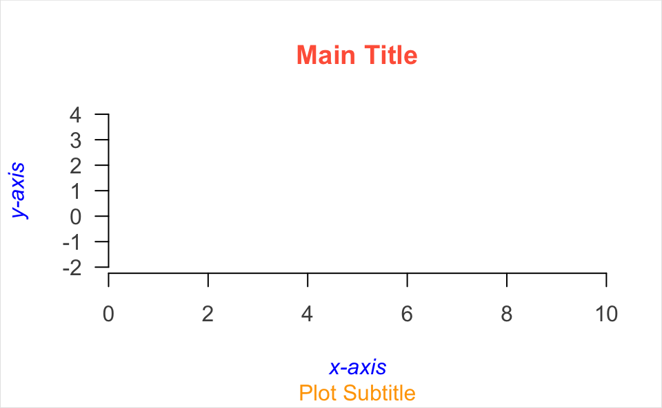
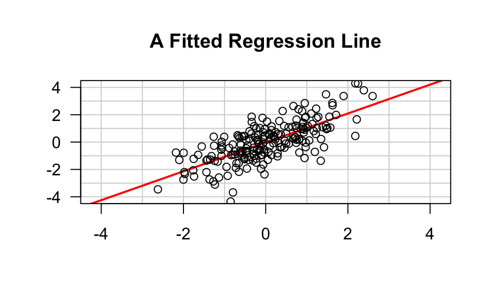
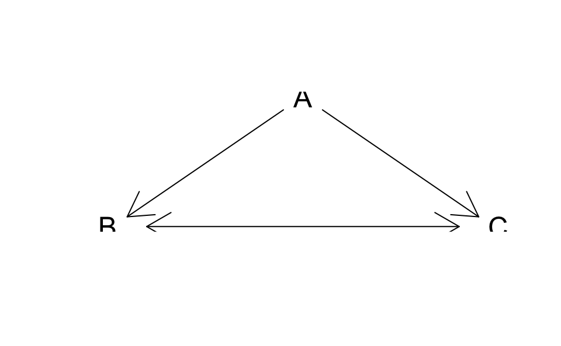

16 Plots from Scratch
In this chapter we describe one of my favorite graphing approaches to create what I like to call plots from scratch. That is, making a graph in a way that we have full control of all the nitty-gritty details of a plot.
16.1 Making a graphic from scratch
In addition to using plot(), possibly calling one or more low-level
functions, you should know that it is also possible to create a plot from
scratch. Although this procedure is less documented, it is extremely flexible
and powerful. The general recipe to create a plot with this approach is as
follows:
call
plot.new()to start a new plot framecall
plot.window()to define coordinatesthen call low-level functions:
typical options involve
axis()then
title()(title, subtitle)after that call other function: e.g.
points(),lines(), etc
plot.new()
plot.window(xlim = c(0, 10), ylim = c(-2, 4), xaxs = "i")
axis(side = 1, col.axis = "grey30")
axis(side = 2, col.axis = "grey30", las = 1)
title(main = "Main Title",
col.main = "tomato",
sub = "Plot Subtitle",
col.sub = "orange",
xlab = "x-axis",
ylab = "y-axis",
col.lab = "blue",
font.lab = 3)
box("figure", col = "grey90")
Here’s another example:
set.seed(5)
x <- rnorm(200)
y <- x + rnorm(200)
plot.new()
plot.window(xlim = c(-4.5, 4.5), xaxs = "i",
ylim = c(-4.5, 4.5), yaxs = "i")
z <- lm(y ~ x)
abline(h = -4:4, v = -4:4, col = "lightgrey")
abline(a = coef(z)[1], b = coef(z)[2], lwd = 2, col = "red")
points(x, y)
axis(side = 1)
axis(side = 2, las = 1)
box()
title(main = "A Fitted Regression Line")
16.1.1 How does it work
You start a new plot with plot.new()
plot.new()opens a new (empty) plot frameplot.new()chooses a default plotting region
After starting with plot.new(), use plot.window() to set up the coordinate
system for the plotting frame
# axis limits (0,1)x(0,1)
plot.window(xlim = c(0, 1), ylim = c(0, 1))By default plot.window() produces axis limits which are expanded by 6%
over those actually specified.
The default limits expansion can be turned-off by specifying xaxs = "i"
and/or yaxs = "i"
plot.window(xlim, ylim, xaxs = "i")Aspect Ratio Control
Another important argument is asp, which allows us to specify the
aspect ratio
plot.window(xlim, ylim, xaxs = "i", asp = 1)asp = 1 means that unit steps in the x and y directions produce equal
distances in the x and y directions on the plot.
(Important for avoiding distortion of circles that look like ellipses)
Drawing Axes
The axis() function can be used to draw axes at any of the four sides of a plot.
side = 1below the graphside = 2to the left of the graphside = 3above the graphside = 4to the right of the graph
Axes can be customized via several arguments (see ?axis)
location of tick-marks
labels of axis
colors
sizes
text fonts
text orientation
Plot Annotatiosn
The function title() allows us to include labels in the margins
mainmain title above the graphsubsubtitle below the graphxlablabel for the x-axisylablabel for the y-axis
The annotations can be customized with additional arguments for the fonts, colors, and size (expansion)
font.main,col.main,cex.mainfont.sub,col.sub,cex.subfont.lab,col.lab,cex.lab
16.1.2 Drawing Arrows
plot.new()
plot.window(xlim = c(0, 1), ylim = c(0, 1))
arrows(0.05, 0.075, 0.45, 0.9, code = 1)
arrows(0.55, 0.9, 0.95, 0.075, code = 2)
arrows(0.1, 0, 0.9, 0, code = 3)
text(0.5, 1, "A", cex = 1.5)
text(0, 0, "B", cex = 1.5)
text(1, 0, "C", cex = 1.5)
16.1.3 Drawing Rectangles
Rectangles can be drawn with the function:
rect(x0, y0, x1, y1, col = str, border = str)x0, y0, x1, y1give the coordinates of diagonally opposite corners of the rectangles/colspecifies the color of the interior.borderspecifies the color of the border/
# barplot "manually" constructed
plot.new()
plot.window(xlim = c(0, 5), ylim = c(0, 10))
rect(0:4, 0, 1:5, c(7, 8, 4, 3),
col = "turquoise",
border = "white")
axis(1)
axis(2, las = 1)